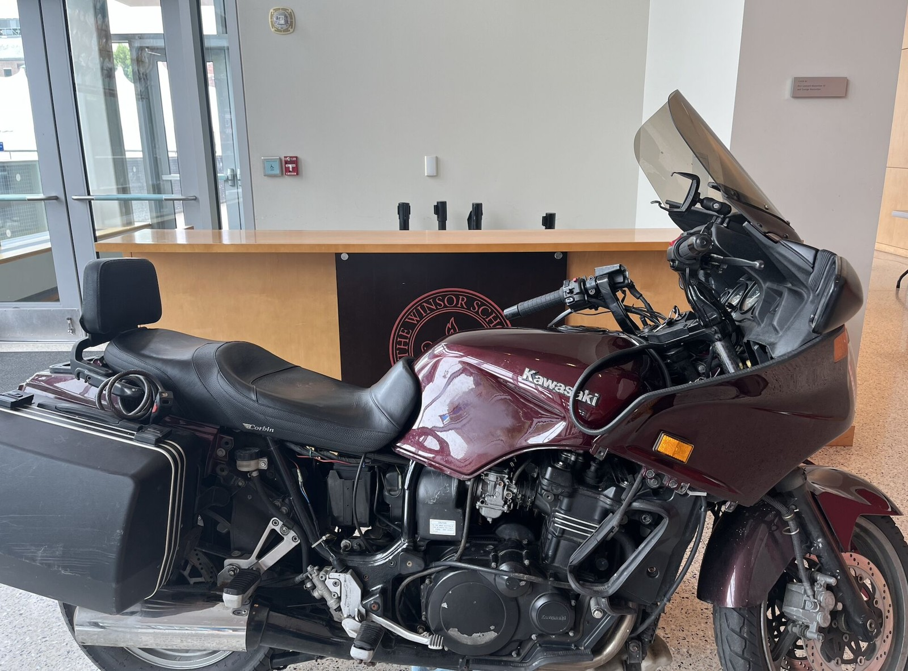

SELECTED WORK / Mechanical restoration · fuel systems · electrical troubleshooting
Kawasaki Concours 1000
May–June 2025 · Project Lead
Independent restoration
I rebuilt carburetors, fuel systems and electrical components on a Kawasaki Concours 1000, working across mechanical and electrical systems.
Mechanical restoration · fuel systems · electrical troubleshooting
